我看了一个电影
Mình đã xem một bộ phim
Bài 14 · 3 bài khóa · 26 mục từ · 了(2) · từ li hợp · 都
🔥 Khởi động
Mỗi ảnh là một câu riêng. Chọn từ tương ứng với hình ảnh.
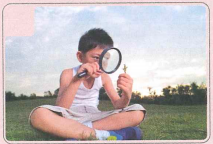
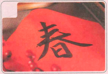
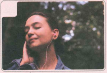
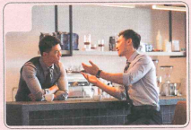
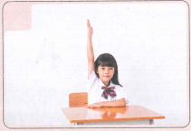
📚 Từ vựng 1
🎧 Nghe Bài khóa 1
Nghe hội thoại hai lượt và chọn đáp án đúng
💬 Bài khóa 1 · 我看了一个电影
Ngữ cảnh: Trong lớp học sau giờ tan học, Bạch Gia Nguyệt và Trần Thiên Trung nói về chuyến du lịch ngoại khóa lần trước.
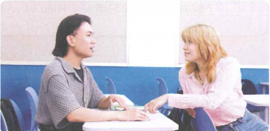
Trả lời theo bài khóa
（1）车开后，大家在做什么？
Sau khi tàu chạy, mọi người làm gì?
（2）陈天中为什么没看见王老师？
Tại sao Trần Thiên Trung không nhìn thấy cô Vương?
🧠 Ngữ pháp 1–2
1. Trợ từ động thái “了（2）”
了 đứng sau động từ, biểu thị hành động đã xảy ra hoặc đã hoàn thành. Khi phủ định dùng 没（有） và thường bỏ 了.
我看了一个电影。
我买了一个新电脑。
我昨天没去商店买东西。
Luyện tập
我昨天看（ ）电影，（ ）去超市。
我昨天去（ ）超市，（ ）看电影。
2. Từ li hợp (1)
Các từ như 上课、下课、上班、下班、说话、读书、睡觉、看病 có thể tách ra khi chèn thành phần khác vào giữa.
上课 → 上了课 / 上中文课
下班 → 下了班
生病 → 生了病 / 生了大病
说话 → 说了话 / 说了很多话
📚 Từ vựng 2
🎧 Nghe Bài khóa 2
Nghe hội thoại hai lượt và chọn đáp án đúng
💬 Bài khóa 2 · 都会写汉字了
Ngữ cảnh: Trong lớp học, cô Vương Nhất Phi hỏi thăm tình hình học tập của học sinh.
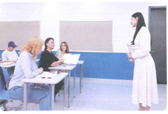
Trả lời theo bài khóa
（1）白家月会写汉字了吗？
Bạch Gia Nguyệt đã biết viết chữ Hán chưa?
（2）陈天中会写汉字了吗？
Trần Thiên Trung đã biết viết chữ Hán chưa?
🧠 Ngữ pháp 3 · Phó từ chỉ phạm vi “都”
都 biểu thị toàn bộ/tất cả. Đối tượng được bao quát thường đứng trước 都. Khi phủ định, từ phủ định đứng sau 都.
Chủ thể/phạm vi + 都 + 没/不 + vị ngữ
我们都会写了。
我和我的朋友们都去。
同学们都没听见。
Luyện nhanh
📚 Từ vựng 3
🎧 Nghe Bài khóa 3
Nghe hội thoại hai lượt và chọn đáp án đúng
💬 Bài khóa 3 · 上学后，他们都忙了
Ngữ cảnh: Ở nhà, Lưu Minh và Vương Nhất Tuyết đang trò chuyện về tình hình học tập của các con.
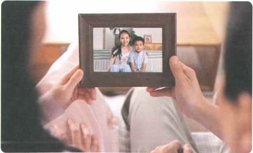
Trả lời theo bài khóa
（1）明年女儿和儿子都上小学吗？
Sang năm, con gái và con trai đều bắt đầu học tiểu học phải không?
（2）上学后，他们忙不忙？
Sau khi vào học, các bạn ấy có bận không?
✏️ Bài tập tổng hợp
1. Chọn từ thích hợp điền vào chỗ trống
A 上学 B 了 C 都 D 听见 E 有的
Đáp án: 上学；都
2. Dùng từ vựng và điểm ngôn ngữ đã học để miêu tả ảnh
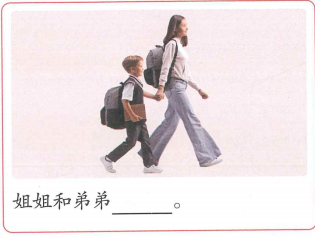
姐姐和弟弟______。
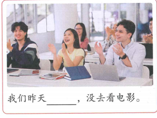
我们昨天______，没去看电影。
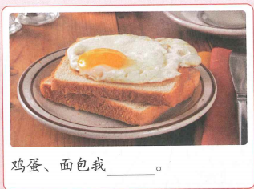
鸡蛋、面包我______。
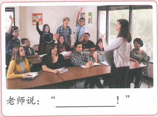
老师说：“______！”
🗣️ Hoạt động trên lớp
Hoạt động theo nhóm hai người
Hai người một nhóm, nói về những việc bạn đã làm vào thứ Bảy hoặc Chủ nhật tuần trước.
我星期六上午上了中文课，中午吃了饭后休息了一下，下午去商店买了一些东西，晚上和朋友吃了晚饭。……
✅ Tổng kết Bài 14
- Dùng 了（2） để biểu thị hành động đã xảy ra/hoàn thành và biết phủ định bằng 没（有）.
- Nắm cách dùng cơ bản của từ li hợp.
- Dùng 都 để biểu thị phạm vi “đều/tất cả”.
- Biết miêu tả tình hình học tập.
- Đã luyện đầy đủ 3 bài khóa với audio 14-1, 14-3, 14-5.